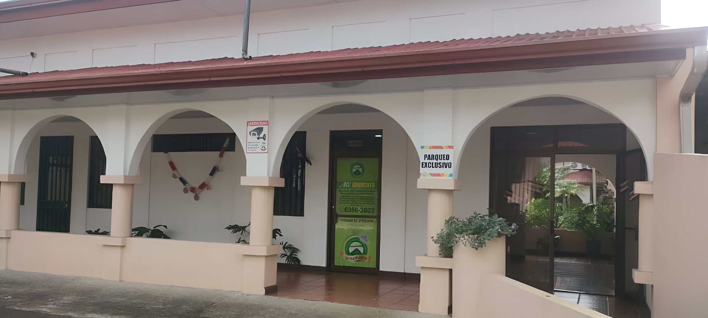

Bienvenidos al Sindicato de Trabajadores de la Municipalidad de San Carlos (SITRAMUSCA). Desde 1979, hemos sido la voz y la fuerza de los trabajadores municipales, defendiendo sus derechos, promoviendo la justicia laboral y fortaleciendo la unidad sindical.
Nuestro compromiso va más allá de la negociación colectiva: trabajamos por el Bienestar en Bienestar, impulsando valores como la solidaridad, la democracia, la transparencia y la responsabilidad social. En este espacio encontrarás información sobre nuestra historia, misión, visión y valores, convenios y recursos que fortalecen la participación activa de todos los trabajadores.